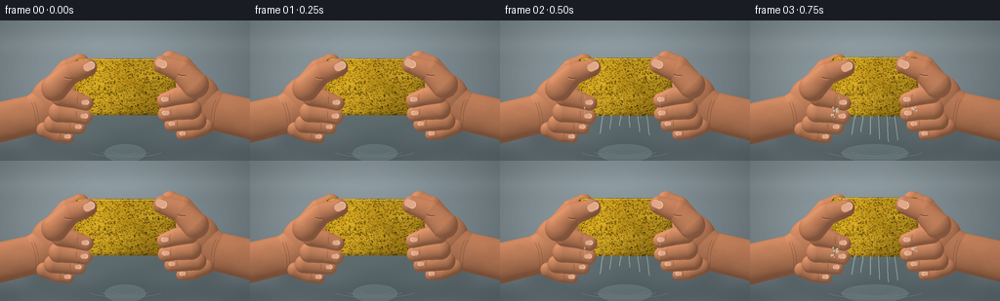
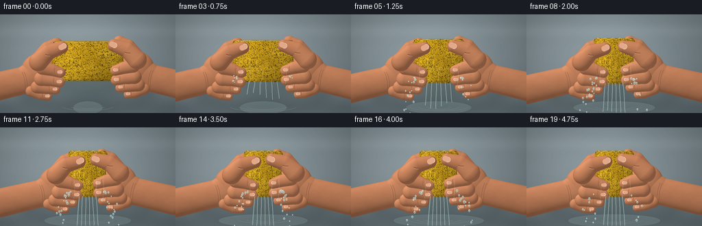

CODING AGENTS AS PIXEL WORLD MODELS
traex/GPT-6.1-Sol · mechanics_0015
点击播放 · 原生 RGB 像素
逐轮保存的候选
回放视频、检查图与代码变化。
每份候选均可单独播放。实际图片检查记录在下方工具轨迹中。
候选 01播放与检查图
点击播放 · 原生 RGB 像素


展开代码变化
--- 上一保存版本
+++ 本次保存版本
@@ -0,0 +1,244 @@
+from pathlib import Path
+import math
+import numpy as np
+from PIL import Image, ImageDraw, ImageFilter
+import artifact_io
+
+ROOT=Path(__file__).resolve().parent
+W,H,S=256,144,3
+WW,HH=W*S,H*S
+Y,X=np.mgrid[0:HH,0:WW].astype(np.float32)/S
+rng=np.random.default_rng(41)
+
+def noise(w,h,seed):
+ r=np.random.default_rng(seed)
+ out=np.zeros((h,w),np.float32)
+ for size,amp in [(5,.48),(17,.28),(58,.15),(180,.09)]:
+ a=Image.fromarray(np.uint8(r.random((size,size))*255))
+ out+=np.asarray(a.resize((w,h),Image.Resampling.BICUBIC),dtype=np.float32)/255*amp
+ return out
+skin_noise=noise(WW,HH,2)
+# The sink stays stationary: softly brushed steel, out of focus.
+base=np.zeros((HH,WW,3),np.float32)
+light=np.exp(-((X-103)/143)**2-((Y-53)/94)**2)
+for c,b in enumerate([99,112,117]): base[:,:,c]=b+42*light+3*(skin_noise-.5)
+# curved sink wall and reflected light
+base+= (7*np.exp(-((Y-24)/9)**2)-16*np.exp(-((Y-139)/16)**2))[...,None]
+base+= (4*np.sin(X*.06+Y*.025)*np.exp(-((Y-125)/19)**2))[...,None]
+bg=Image.fromarray(np.uint8(np.clip(base,0,255))).filter(ImageFilter.GaussianBlur(1.4*S))
+# Stable porous sponge texture, deformed rather than resampled randomly each frame.
+TW,TH=610,370
+n=noise(TW,TH,54)
+t=np.empty((TH,TW,3),np.uint8)
+for c,b in enumerate([219,172,34]): t[:,:,c]=np.clip(b+np.array([56,53,25])[c]*(n-.48),0,255)
+tex=Image.fromarray(t).convert('RGB'); d=ImageDraw.Draw(tex)
+for k in range(3900):
+ px=float(rng.uniform(0,TW)); py=float(rng.uniform(0,TH))
+ rr=float(rng.choice([.8,1.3,2.0,3.,4.7],p=[.24,.31,.27,.15,.03]))
+ rx=rr*rng.uniform(.8,1.7); ry=rr*rng.uniform(.65,1.2)
+ shade=int(rng.uniform(68,125))
+ d.ellipse((px-rx,py-ry,px+rx,py+ry),fill=(shade+32,shade,14))
+ d.arc((px-rx,py-ry+.8,px+rx,py+ry+1.2),5,160,fill=(245,199,58),width=1)
+ if rr>2: d.ellipse((px-rx*.5,py-ry*.55,px+rx*.45,py+ry*.35),fill=(shade+14,shade-10,9))
+tex=np.asarray(tex).astype(np.float32)
+
+# Broad palms and tapered fingers are lit height fields with continuous rounded skin.
+def ellipsoid(cx,cy,rx,ry,rz,zbase=0):
+ q=((X-cx)/rx)**2+((Y-cy)/ry)**2
+ return np.where(q<1,zbase+rz*np.sqrt(np.maximum(0,1-q)),-1000).astype(np.float32)
+
+def tube(points,radii,thickness=.87,zbase=0):
+ z=np.full((HH,WW),-1000,dtype=np.float32)
+ for i in range(len(points)-1):
+ ax,ay=points[i]; bx,by=points[i+1]
+ vx,vy=bx-ax,by-ay
+ tt=np.clip(((X-ax)*vx+(Y-ay)*vy)/(vx*vx+vy*vy+.0001),0,1)
+ cx=ax+tt*vx; cy=ay+tt*vy
+ rr=radii[i]+tt*(radii[i+1]-radii[i])
+ q=((X-cx)**2+(Y-cy)**2)/(rr*rr)
+ zi=np.where(q<1,zbase+rr*thickness*np.sqrt(np.maximum(0,1-q)),-1000)
+ z=np.maximum(z,zi)
+ return z
+
+def skin_layer(z,seed=0):
+ mask=z>-999
+ # normal calculation on the actual rounded surface, not a flat painted gradient
+ zs=np.where(mask,z,0)
+ dy,dx=np.gradient(zs,1/S)
+ norm=np.sqrt(1+dx*dx+dy*dy)
+ illum=np.clip((-dx*(-.48)-dy*(-.63)+.61)/norm,0,1)
+ rim=1/norm
+ col=np.zeros((HH,WW,3),np.float32)
+ warm=np.array([193,128,91],np.float32)
+ lighting=.68+.46*illum
+ for c in range(3): col[:,:,c]=warm[c]*lighting+(skin_noise-.5)*np.array([18,15,13])[c]
+ spec=9*np.maximum(0,(illum-.70)/.3)**4
+ col+=spec[...,None]
+ col[:,:,0]+=6*(1-rim); col[:,:,2]-=2*(1-rim)
+ rgba=np.dstack((np.clip(col,0,255).astype(np.uint8),mask.astype(np.uint8)*255))
+ return Image.fromarray(rgba,'RGBA')
+
+def pt(x,y):return (x*S,y*S)
+def curve(draw,coords,color,width):
+ # Bezier curves sampled for subtle folds / fine streams.
+ pp=np.array(coords,float); vv=[]
+ for a in np.linspace(0,1,40):
+ if len(pp)==3: v=(1-a)**2*pp[0]+2*(1-a)*a*pp[1]+a*a*pp[2]
+ else:v=(1-a)**3*pp[0]+3*(1-a)**2*a*pp[1]+3*(1-a)*a*a*pp[2]+a**3*pp[3]
+ vv.append(pt(*v))
+ draw.line(vv,fill=color,width=max(1,round(width*S)),joint='curve')
+
+def nail(im,center,length,width,angle):
+ # thin translucent rounded nails; highlights and cuticle follow each finger.
+ ns=4
+ nailim=Image.new('RGBA',(int(length*S*2),int(length*S*2)),(0,0,0,0))
+ nd=ImageDraw.Draw(nailim)
+ cx=length*S;cy=length*S
+ box=(cx-length*S/2,cy-width*S/2,cx+length*S/2,cy+width*S/2)
+ nd.rounded_rectangle(box,radius=width*S*.46,fill=(227,170,138,255),outline=(156,103,78,180),width=1)
+ nd.arc((box[0]+1,box[1]+1,box[2]-1,box[3]-1),-75,65,fill=(244,209,182,240),width=2)
+ nd.line((box[0]+length*S*.28,cy-width*S*.23,box[2]-length*S*.25,cy-width*S*.23),fill=(244,200,169,130),width=1)
+ rot=nailim.rotate(angle,resample=Image.Resampling.BICUBIC)
+ im.alpha_composite(rot,(round(center[0]*S-rot.width/2),round(center[1]*S-rot.height/2)))
+
+# Fixed droplets have ballistic positions at a given physical time.
+drops=[]
+rr=np.random.default_rng(8)
+for j in range(155):
+ birth=float(rr.uniform(.45,4.35));side=rr.choice([-1,1]);
+ drops.append((birth,side,float(rr.uniform(4,22)),float(rr.uniform(5,34)),float(rr.uniform(-23,17)),float(rr.uniform(.5,1.45))))
+
+def frame(i):
+ tm=i/4
+ # Pressure accelerates, then stays high. No release at the end.
+ p=1-np.exp(-((tm/1.24)**2))
+ p=min(p,.985)
+ hw=52-26*p
+ hh=29+5*p
+ cx,cy=128,68
+ L,R=cx-hw,cx+hw
+ im=bg.copy().convert('RGBA')
+ # Diffuse shadow underneath hands and sponge.
+ sh=Image.new('RGBA',(WW,HH));sd=ImageDraw.Draw(sh)
+ sd.ellipse((27*S,84*S,228*S,142*S),fill=(23,36,39,70))
+ sd.ellipse(((L-6)*S,57*S,(R+6)*S,123*S),fill=(24,37,34,85))
+ sh=sh.filter(ImageFilter.GaussianBlur(8*S));im.alpha_composite(sh)
+ # Thin pool with moving highlights against sink steel.
+ water=Image.new('RGBA',(WW,HH));wd=ImageDraw.Draw(water)
+ pool=21+37*p+2*tm
+ wd.ellipse(((128-pool)*S,127*S,(128+pool)*S,145*S),fill=(171,198,198,47),outline=(205,224,223,51),width=1)
+ for r in [13,25,38]:
+ r=r+((tm*15)%13)
+ wd.arc(((128-r)*S,(132-r*.11)*S,(128+r)*S,(136+r*.11)*S),15,165,fill=(220,235,230,75),width=1)
+ im.alpha_composite(water)
+ # Arms and the outside of each hand are behind the sponge.
+ bodies=[]
+ for side in [-1,1]:
+ def P(x,y):return (x if side==-1 else 256-x,y+(0 if side==-1 else -3))
+ shift=26*p
+ z=tube([P(-25+shift,110),P(35+shift,96),P(57+shift,84)],[21,20,22],.65)
+ z=np.maximum(z,ellipsoid(*P(60+shift,82),29,26,16))
+ z=np.maximum(z,tube([P(59+shift,68),P(70+shift,51),P(82+shift,43)],[15,12,9],.8))
+ z=np.maximum(z,tube([P(61+shift,85),P(79+shift,80)],[18,13],.8))
+ bodies.append(z)
+ im.alpha_composite(skin_layer(z))
+ dr=ImageDraw.Draw(im)
+ # wrist folds, softly offset highlights and subtle palm creases
+ for off in [0,3]:
+ a=P(32+shift+off,84);b=P(37+shift+off,94);c=P(37+shift+off,109)
+ curve(dr,[a,b,c],(126,77,54,75),.45)
+ curve(dr,[P(48+shift,73),P(59+shift,71),P(68+shift,79)],(125,75,50,80),.55)
+ # Render the bulging sponge front using inverse material coordinates.
+ vv=(Y-cy)/hh
+ bw=hw*(1+.10*p*vv*vv)
+ corner=3.5*np.maximum((np.abs(vv)-.78)/.22,0)**2
+ edge=bw-corner+(.5+.85*p)*np.sin(vv*10+1)*np.sin(vv*3)
+ uu=(X-cx)/np.maximum(edge,1)
+ m=(np.abs(vv)<=1)&(np.abs(uu)<=1)
+ tx=np.clip((uu+1)*.5*(TW-1),0,TW-1)
+ ty=np.clip((vv+1)*.5*(TH-1),0,TH-1)
+ xi=tx.astype(int);yi=ty.astype(int)
+ col=tex[yi,xi].copy()
+ bevel=np.clip((1-np.abs(uu))/.11,0,1)*np.clip((1-np.abs(vv))/.12,0,1)
+ shade=.89+.13*(-uu)+.08*(-vv)-.19*(1-bevel)
+ # Surface buckles into uneven vertical compression folds.
+ folds=p*(.048*np.sin(uu*23+vv*4)+.04*np.sin(uu*49-vv*5))*np.maximum(0,1-np.abs(vv))
+ shade+=folds
+ col*=shade[...,None]
+ # Wet glints along the rounded compressed foam.
+ shine=(np.maximum(0,np.sin(uu*54+vv*7))**22)*p*6
+ col+=shine[...,None]
+ sponge=Image.fromarray(np.dstack((np.clip(col,0,255).astype(np.uint8),m.astype(np.uint8)*255)),'RGBA')
+ im.alpha_composite(sponge)
+ # Irregular foam bevel, rather than a hard outline.
+ dr=ImageDraw.Draw(im)
+ top=[]
+ for u in np.linspace(-.90,.90,80):top.append(pt(cx+u*hw,cy-hh+1.2+.8*p*math.sin(u*16)))
+ dr.line(top,fill=(246,210,83,220),width=2)
+ # Fingers wrap around both lateral edges; palms push inward as the foam narrows.
+ for side in [-1,1]:
+ def P(x,y):return (x if side==-1 else 256-x,y+(0 if side==-1 else -3))
+ shift=26*p
+ fingers=[([(62+shift,78),(76+shift,81),(L+12,85)],[10,9,7.5]),
+ ([(60+shift,94),(75+shift,96),(L+11,99)],[10.5,9,7.6]),
+ ([(54+shift,106),(68+shift,108),(L+5,110)],[9.3,8.2,6.8]),
+ ([(45+shift,112),(59+shift,118),(L-6,120)],[7.8,6.8,5.7])]
+ # pinky first, then middle/index; natural layered overlap.
+ for k in [3,2,1,0]:
+ points,rad=fingers[k]; points=[P(*a) for a in points]
+ layer=skin_layer(tube(points,rad,.86))
+ im.alpha_composite(layer)
+ dr=ImageDraw.Draw(im)
+ a,b=points[-2],points[-1]
+ # small crease at the distal joint
+ xx=a[0]*.6+b[0]*.4; yy=a[1]*.6+b[1]*.4
+ curve(dr,[(xx-1,yy-rad[-1]*.5),(xx-2,yy),(xx-1,yy+rad[-1]*.45)],(127,78,52,115),.45)
+ angle=0 if side==-1 else 180
+ # Visible nail on the wrapped fingertips.
+ end=points[-1]
+ nail(im,(end[0]+(-1 if side==-1 else 1),end[1]-1.1),8.4 if k<2 else 7,5.5 if k<2 else 4.7,angle)
+ thumbpts=[P(56+shift,69),P(70+shift,55),P(L+14,48+2*p)]
+ im.alpha_composite(skin_layer(tube(thumbpts,[14,11.7,9.2],.9)))
+ nail(im,(thumbpts[-1][0]-side*1.0,thumbpts[-1][1]-1),12.7,8.9,25 if side==-1 else -25)
+ dr=ImageDraw.Draw(im)
+ a=thumbpts[1]
+ curve(dr,[(a[0]-4,a[1]+3),(a[0],a[1]+5),(a[0]+4,a[1]+4)],(122,75,53,150),.6)
+ curve(dr,[(a[0]-4,a[1]+4.5),(a[0],a[1]+6.5),(a[0]+3,a[1]+5.8)],(229,163,119,130),.4)
+ # Water escaping from the exposed lower sponge edge. Streams speed up with pressure.
+ liquid=Image.new('RGBA',(WW,HH));ld=ImageDraw.Draw(liquid)
+ if p>.05:
+ count=6
+ for j in range(count):
+ u=(j-2.5)/3.7
+ sx=cx+u*hw*.68;sy=cy+hh-1
+ strength=(.35+.65*p)*(1-.10*j)
+ end=min(143,sy+11+36*p+5*math.sin(tm*5+j))
+ bend=math.sin(tm*8+j*2)*1.1
+ coords=[(sx,sy),(sx+2*u+bend,sy+8),(sx+4*u-bend,end-5),(sx+5*u,end)]
+ curve(ld,coords,(129,170,173,140),1.2*strength)
+ curve(ld,[(x-.35,y) for x,y in coords],(226,243,229,205),.5*strength)
+ # Small wet rivulets on skin and foam, glossy not opaque blue.
+ for j in range(5):
+ sx=L+7+j*hw*.40
+ curve(ld,[(sx,cy+9),(sx+1,cy+20),(sx-1,cy+hh+3)],(249,249,200,90),.35)
+ for birth,side,off,vx,vy,r in drops:
+ age=tm-birth
+ if not 0<age<.95:continue
+ ex=cx+side*(hw*.8+off*.2+vx*age)
+ ey=cy+hh-8+vy*age+71*age*age
+ if ey>145:continue
+ rr=r*(.5+.6*p)
+ ld.ellipse(((ex-rr)*S,(ey-rr*1.4)*S,(ex+rr)*S,(ey+rr*1.4)*S),fill=(153,191,193,165),outline=(224,242,235,220),width=1)
+ ld.ellipse(((ex-rr*.45)*S,(ey-rr*.8)*S,(ex+rr*.1)*S,(ey-rr*.25)*S),fill=(247,253,242,220))
+ im.alpha_composite(liquid)
+ # restrained lens vignette / natural color finish
+ out=np.asarray(im.convert('RGB'),dtype=np.float32)
+ vign=1-.11*((X-128)/154)**2-.065*((Y-70)/100)**2
+ out*=vign[...,None]
+ return np.asarray(Image.fromarray(np.uint8(np.clip(out,0,255))).resize((W,H),Image.Resampling.LANCZOS))
+
+def main():
+ frames=np.stack([frame(i) for i in range(20)])
+ artifact_io.save(frames,ROOT)
+
+if __name__=='__main__':main()
可观测工具轨迹
实际执行的命令与返回图片。
命令 1exit 0
/bin/bash -lc 'ls -la && cat prompt.txt && cat GENERATION_RULES.md && cat task_spec.json'
命令 2exit 0
/bin/bash -lc 'cat artifact_io.py'
命令 3exit 0
/bin/bash -lc "cat > generate.py <<'PY'
from pathlib import Path
import math
import numpy as np
from PIL import Image, ImageDraw, ImageFilter
import artifact_io
ROOT=Path(__file__).resolve().parent
W,H,S=256,144,3
WW,HH=W*S,H*S
Y,X=np.mgrid[0:HH,0:WW].astype(np.float32)/S
rng=np.random.default_rng(41)
def noise(w,h,seed):
r=np.random.default_rng(seed)
out=np.zeros((h,w),np.float32)
for size,amp in [(5,.48),(17,.28),(58,.15),(180,.09)]:
a=Image.fromarray(np.uint8(r.random((size,size))*255))
out+=np.asarray(a.resize((w,h),Image.Resampling.BICUBIC),dtype=np.float32)/255*amp
return out
skin_noise=noise(WW,HH,2)
# The sink stays stationary: softly brushed steel, out of focus.
base=np.zeros((HH,WW,3),np.float32)
light=np.exp(-((X-103)/143)**2-((Y-53)/94)**2)
for c,b in enumerate([99,112,117]): base[:,:,c]=b+42*light+3*(skin_noise-.5)
# curved sink wall and reflected light
base+= (7*np.exp(-((Y-24)/9)**2)-16*np.exp(-((Y-139)/16)**2))[...,None]
base+= (4*np.sin(X*.06+Y*.025)*np.exp(-((Y-125)/19)**2))[...,None]
bg=Image.fromarray(np.uint8(np.clip(base,0,255))).filter(ImageFilter.GaussianBlur(1.4*S))
# Stable porous sponge texture, deformed rather than resampled randomly each frame.
TW,TH=610,370
n=noise(TW,TH,54)
t=np.empty((TH,TW,3),np.uint8)
for c,b in enumerate([219,172,34]): t[:,:,c]=np.clip(b+np.array([56,53,25])[c]*(n-.48),0,255)
tex=Image.fromarray(t).convert('RGB'); d=ImageDraw.Draw(tex)
for k in range(3900):
px=float(rng.uniform(0,TW)); py=float(rng.uniform(0,TH))
rr=float(rng.choice([.8,1.3,2.0,3.,4.7],p=[.24,.31,.27,.15,.03]))
rx=rr*rng.uniform(.8,1.7); ry=rr*rng.uniform(.65,1.2)
shade=int(rng.uniform(68,125))
d.ellipse((px-rx,py-ry,px+rx,py+ry),fill=(shade+32,shade,14))
d.arc((px-rx,py-ry+.8,px+rx,py+ry+1.2),5,160,fill=(245,199,58),width=1)
if rr>2: d.ellipse((px-rx*.5,py-ry*.55,px+rx*.45,py+ry*.35),fill=(shade+14,shade-10,9))
tex=np.asarray(tex).astype(np.float32)
# Broad palms and tapered fingers are lit height fields with continuous rounded skin.
def ellipsoid(cx,cy,rx,ry,rz,zbase=0):
q=((X-cx)/rx)**2+((Y-cy)/ry)**2
return np.where(q<1,zbase+rz*np.sqrt(np.maximum(0,1-q)),-1000).astype(np.float32)
def tube(points,radii,thickness=.87,zbase=0):
z=np.full((HH,WW),-1000,dtype=np.float32)
for i in range(len(points)-1):
ax,ay=points[i]; bx,by=points[i+1]
vx,vy=bx-ax,by-ay
tt=np.clip(((X-ax)*vx+(Y-ay)*vy)/(vx*vx+vy*vy+.0001),0,1)
cx=ax+tt*vx; cy=ay+tt*vy
rr=radii[i]+tt*(radii[i+1]-radii[i])
q=((X-cx)**2+(Y-cy)**2)/(rr*rr)
zi=np.where(q<1,zbase+rr*thickness*np.sqrt(np.maximum(0,1-q)),-1000)
z=np.maximum(z,zi)
return z
def skin_layer(z,seed=0):
mask=z>-999
# normal calculation on the actual rounded surface, not a flat painted gradient
zs=np.where(mask,z,0)
dy,dx=np.gradient(zs,1/S)
norm=np.sqrt(1+dx*dx+dy*dy)
illum=np.clip((-dx*(-.48)-dy*(-.63)+.61)/norm,0,1)
rim=1/norm
col=np.zeros((HH,WW,3),np.float32)
warm=np.array([193,128,91],np.float32)
lighting=.68+.46*illum
for c in range(3): col[:,:,c]=warm[c]*lighting+(skin_noise-.5)*np.array([18,15,13])[c]
spec=9*np.maximum(0,(illum-.70)/.3)**4
col+=spec[...,None]
col[:,:,0]+=6*(1-rim); col[:,:,2]-=2*(1-rim)
rgba=np.dstack((np.clip(col,0,255).astype(np.uint8),mask.astype(np.uint8)*255))
return Image.fromarray(rgba,'RGBA')
def pt(x,y):return (x*S,y*S)
def curve(draw,coords,color,width):
# Bezier curves sampled for subtle folds / fine streams.
pp=np.array(coords,float); vv=[]
for a in np.linspace(0,1,40):
if len(pp)==3: v=(1-a)**2*pp[0]+2*(1-a)*a*pp[1]+a*a*pp[2]
else:v=(1-a)**3*pp[0]+3*(1-a)**2*a*pp[1]+3*(1-a)*a*a*pp[2]+a**3*pp[3]
vv.append(pt(*v))
draw.line(vv,fill=color,width=max(1,round(width*S)),joint='curve')
def nail(im,center,length,width,angle):
# thin translucent rounded nails; highlights and cuticle follow each finger.
ns=4
nailim=Image.new('RGBA',(int(length*S*2),int(length*S*2)),(0,0,0,0))
nd=ImageDraw.Draw(nailim)
cx=length*S;cy=length*S
box=(cx-length*S/2,cy-width*S/2,cx+length*S/2,cy+width*S/2)
nd.rounded_rectangle(box,radius=width*S*.46,fill=(227,170,138,255),outline=(156,103,78,180),width=1)
nd.arc((box[0]+1,box[1]+1,box[2]-1,box[3]-1),-75,65,fill=(244,209,182,240),width=2)
nd.line((box[0]+length*S*.28,cy-width*S*.23,box[2]-length*S*.25,cy-width*S*.23),fill=(244,200,169,130),width=1)
rot=nailim.rotate(angle,resample=Image.Resampling.BICUBIC)
im.alpha_composite(rot,(round(center[0]*S-rot.width/2),round(center[1]*S-rot.height/2)))
# Fixed droplets have ballistic positions at a given physical time.
drops=[]
rr=np.random.default_rng(8)
for j in range(155):
birth=float(rr.uniform(.45,4.35));side=rr.choice([-1,1]);
drops.append((birth,side,float(rr.uniform(4,22)),float(rr.uniform(5,34)),float(rr.uniform(-23,17)),float(rr.uniform(.5,1.45))))
def frame(i):
tm=i/4
# Pressure accelerates, then stays high. No release at the end.
p=1-np.exp(-((tm/1.24)**2))
p=min(p,.985)
hw=52-26*p
hh=29+5*p
cx,cy=128,68
L,R=cx-hw,cx+hw
im=bg.copy().convert('RGBA')
# Diffuse shadow underneath hands and sponge.
sh=Image.new('RGBA',(WW,HH));sd=ImageDraw.Draw(sh)
sd.ellipse((27*S,84*S,228*S,142*S),fill=(23,36,39,70))
sd.ellipse(((L-6)*S,57*S,(R+6)*S,123*S),fill=(24,37,34,85))
sh=sh.filter(ImageFilter.GaussianBlur(8*S));im.alpha_composite(sh)
# Thin pool with moving highlights against sink steel.
water=Image.new('RGBA',(WW,HH));wd=ImageDraw.Draw(water)
pool=21+37*p+2*tm
wd.ellipse(((128-pool)*S,127*S,(128+pool)*S,145*S),fill=(171,198,198,47),outline=(205,224,223,51),width=1)
for r in [13,25,38]:
r=r+((tm*15)%13)
wd.arc(((128-r)*S,(132-r*.11)*S,(128+r)*S,(136+r*.11)*S),15,165,fill=(220,235,230,75),width=1)
im.alpha_composite(water)
# Arms and the outside of each hand are behind the sponge.
bodies=[]
for side in [-1,1]:
def P(x,y):return (x if side==-1 else 256-x,y+(0 if side==-1 else -3))
shift=26*p
z=tube([P(-25+shift,110),P(35+shift,96),P(57+shift,84)],[21,20,22],.65)
z=np.maximum(z,ellipsoid(*P(60+shift,82),29,26,16))
z=np.maximum(z,tube([P(59+shift,68),P(70+shift,51),P(82+shift,43)],[15,12,9],.8))
z=np.maximum(z,tube([P(61+shift,85),P(79+shift,80)],[18,13],.8))
bodies.append(z)
im.alpha_composite(skin_layer(z))
dr=ImageDraw.Draw(im)
# wrist folds, softly offset highlights and subtle palm creases
for off in [0,3]:
a=P(32+shift+off,84);b=P(37+shift+off,94);c=P(37+shift+off,109)
curve(dr,[a,b,c],(126,77,54,75),.45)
curve(dr,[P(48+shift,73),P(59+shift,71),P(68+shift,79)],(125,75,50,80),.55)
# Render the bulging sponge front using inverse material coordinates.
vv=(Y-cy)/hh
bw=hw*(1+.10*p*vv*vv)
corner=3.5*np.maximum((np.abs(vv)-.78)/.22,0)**2
edge=bw-corner+(.5+.85*p)*np.sin(vv*10+1)*np.sin(vv*3)
uu=(X-cx)/np.maximum(edge,1)
m=(np.abs(vv)<=1)&(np.abs(uu)<=1)
tx=np.clip((uu+1)*.5*(TW-1),0,TW-1)
ty=np.clip((vv+1)*.5*(TH-1),0,TH-1)
xi=tx.astype(int);yi=ty.astype(int)
col=tex[yi,xi].copy()
bevel=np.clip((1-np.abs(uu))/.11,0,1)*np.clip((1-np.abs(vv))/.12,0,1)
shade=.89+.13*(-uu)+.08*(-vv)-.19*(1-bevel)
# Surface buckles into uneven vertical compression folds.
folds=p*(.048*np.sin(uu*23+vv*4)+.04*np.sin(uu*49-vv*5))*np.maximum(0,1-np.abs(vv))
shade+=folds
col*=shade[...,None]
# Wet glints along the rounded compressed foam.
shine=(np.maximum(0,np.sin(uu*54+vv*7))**22)*p*6
col+=shine[...,None]
sponge=Image.fromarray(np.dstack((np.clip(col,0,255).astype(np.uint8),m.astype(np.uint8)*255)),'RGBA')
im.alpha_composite(sponge)
# Irregular foam bevel, rather than a hard outline.
dr=ImageDraw.Draw(im)
top=[]
for u in np.linspace(-.90,.90,80):top.append(pt(cx+u*hw,cy-hh+1.2+.8*p*math.sin(u*16)))
dr.line(top,fill=(246,210,83,220),width=2)
# Fingers wrap around both lateral edges; palms push inward as the foam narrows.
for side in [-1,1]:
def P(x,y):return (x if side==-1 else 256-x,y+(0 if side==-1 else -3))
shift=26*p
fingers=[([(62+shift,78),(76+shift,81),(L+12,85)],[10,9,7.5]),
([(60+shift,94),(75+shift,96),(L+11,99)],[10.5,9,7.6]),
([(54+shift,106),(68+shift,108),(L+5,110)],[9.3,8.2,6.8]),
([(45+shift,112),(59+shift,118),(L-6,120)],[7.8,6.8,5.7])]
# pinky first, then middle/index; natural layered overlap.
for k in [3,2,1,0]:
points,rad=fingers[k]; points=[P(*a) for a in points]
layer=skin_layer(tube(points,rad,.86))
im.alpha_composite(layer)
dr=ImageDraw.Draw(im)
a,b=points[-2],points[-1]
# small crease at the distal joint
xx=a[0]*.6+b[0]*.4; yy=a[1]*.6+b[1]*.4
curve(dr,[(xx-1,yy-rad[-1]*.5),(xx-2,yy),(xx-1,yy+rad[-1]*.45)],(127,78,52,115),.45)
angle=0 if side==-1 else 180
# Visible nail on the wrapped fingertips.
end=points[-1]
nail(im,(end[0]+(-1 if side==-1 else 1),end[1]-1.1),8.4 if k<2 else 7,5.5 if k<2 else 4.7,angle)
thumbpts=[P(56+shift,69),P(70+shift,55),P(L+14,48+2*p)]
im.alpha_composite(skin_layer(tube(thumbpts,[14,11.7,9.2],.9)))
nail(im,(thumbpts[-1][0]-side*1.0,thumbpts[-1][1]-1),12.7,8.9,25 if side==-1 else -25)
dr=ImageDraw.Draw(im)
a=thumbpts[1]
curve(dr,[(a[0]-4,a[1]+3),(a[0],a[1]+5),(a[0]+4,a[1]+4)],(122,75,53,150),.6)
curve(dr,[(a[0]-4,a[1]+4.5),(a[0],a[1]+6.5),(a[0]+3,a[1]+5.8)],(229,163,119,130),.4)
# Water escaping from the exposed lower sponge edge. Streams speed up with pressure.
liquid=Image.new('RGBA',(WW,HH));ld=ImageDraw.Draw(liquid)
if p>.05:
count=6
for j in range(count):
u=(j-2.5)/3.7
sx=cx+u*hw*.68;sy=cy+hh-1
strength=(.35+.65*p)*(1-.10*j)
end=min(143,sy+11+36*p+5*math.sin(tm*5+j))
bend=math.sin(tm*8+j*2)*1.1
coords=[(sx,sy),(sx+2*u+bend,sy+8),(sx+4*u-bend,end-5),(sx+5*u,end)]
curve(ld,coords,(129,170,173,140),1.2*strength)
curve(ld,[(x-.35,y) for x,y in coords],(226,243,229,205),.5*strength)
# Small wet rivulets on skin and foam, glossy not opaque blue.
for j in range(5):
sx=L+7+j*hw*.40
curve(ld,[(sx,cy+9),(sx+1,cy+20),(sx-1,cy+hh+3)],(249,249,200,90),.35)
for birth,side,off,vx,vy,r in drops:
age=tm-birth
if not 0<age<.95:continue
ex=cx+side*(hw*.8+off*.2+vx*age)
ey=cy+hh-8+vy*age+71*age*age
if ey>145:continue
rr=r*(.5+.6*p)
ld.ellipse(((ex-rr)*S,(ey-rr*1.4)*S,(ex+rr)*S,(ey+rr*1.4)*S),fill=(153,191,193,165),outline=(224,242,235,220),width=1)
ld.ellipse(((ex-rr*.45)*S,(ey-rr*.8)*S,(ex+rr*.1)*S,(ey-rr*.25)*S),fill=(247,253,242,220))
im.alpha_composite(liquid)
# restrained lens vignette / natural color finish
out=np.asarray(im.convert('RGB'),dtype=np.float32)
vign=1-.11*((X-128)/154)**2-.065*((Y-70)/100)**2
out*=vign[...,None]
return np.asarray(Image.fromarray(np.uint8(np.clip(out,0,255))).resize((W,H),Image.Resampling.LANCZOS))
def main():
frames=np.stack([frame(i) for i in range(20)])
artifact_io.save(frames,ROOT)
if __name__=='__main__':main()
PY
python generate.py"命令 4exit 0
/bin/bash -lc "python - <<'PY'
import numpy as np
from pathlib import Path
p=Path('.')
a=np.load(p/'pixels.npz')['pixels']
print('Saved RGB video:', a.shape, a.dtype)
print('Frame count:', len(list((p/'frames').glob('*.png'))))
print('Player:', (p/'index.html').exists())
PY"视觉工具实际返回图片 1

保存候选 1 份；完成命令 4 次；可验证图片返回 1 张。原始 API 响应与完整日志保留在本地。